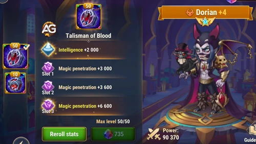
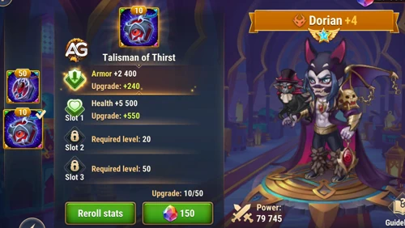
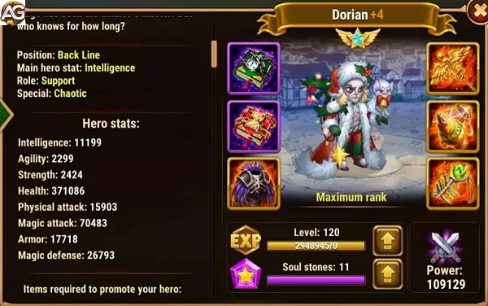

Dorian Guide Hero Wars Alliance
- By: Alexandre Domingos. .
| Attributes | Details |
|---|---|
| Position | Backline |
| Role | Support, Healer |
| Main Statistic | Intelligence |
| Faction | Chaos |
| How to Obtain | Events, Heroic Chest, City Shop |
| Tier List 2025 | Rank |
|---|---|
| Hero Overall Tier List | A+ |
| Hydra Tier List | S |

Maximizing Healing with Dorian in Hero Wars: Strategies and Tips
Dorian, the esteemed healer of Hero Wars, is a character known for his ability to keep his team alive in the toughest moments. As a Mage with a set of support abilities, he stands out as one of the best healers in the game. In this article, we'll explore advanced strategies on how to make the most of Dorian's healing potential and effectively integrate him into your team.
Synergy with Strong Heroes
One of Dorian's standout features is his synergy with a variety of strong heroes. Characters like Daredevil, Orion, Helios, Peppy, Ginger, and even Keira and Fafnir can form powerful combos with Dorian. When assembling your team, consider how Dorian's healing powers can complement the attack and defense abilities of these heroes, providing essential balance for success in battles.
The Importance of the Violet Skill
Dorian's strength lies in his violet skill, which is crucial to maximizing his effectiveness as a healer. When activating his violet skill, an aura is created around Dorian's feet, providing vampirism to nearby allied heroes. This allows allies to heal themselves whenever they attack enemies, significantly increasing their durability and resilience during battles.
It's crucial to observe Dorian's position on the battlefield and ensure that allies remain within the aura to maximize the benefits of vampirism. Strategically positioning Dorian at the center of the team formation can ensure that all members receive the healing effects, thereby increasing the overall effectiveness of the group.
Investing in Dorian
While Dorian is widely recognized for his effectiveness as a healer, he is rarely found in elite teams due to his relative ease of strengthening compared to other heroes. However, underestimating Dorian's value can be a fatal mistake. Even if players choose to prioritize investment in other heroes, having a strong Dorian ready to be used in attacks can be extremely advantageous in critical moments.
Investing in Dorian can ensure an additional layer of security and sustenance to your team, especially in prolonged battles or against powerful opponents. His constant healing ability can make the difference between victory and defeat, making him a valuable asset to any team.
Much more than just a healer
Dorian is much more than just a healer in Hero Wars. His presence on the team can be the crucial element that defines success in tough battles. By maximizing his healing abilities and strategically integrating him with other heroes, players can ensure a significant advantage over their opponents.
Therefore, when planning your team and investing in heroes, do not underestimate the vital role that Dorian can play. With his ability to keep the team alive and healthy, he stands out as one of the fundamental pillars of any effective battle strategy in Hero Wars.
Analysis of Dorian's Talisman of Blood
With the first talisman, Dorian will receive more points for magical attack and magical defense, and a lot of magical penetration in the Reroll, in terms of damage and improving support skills for the team. Little will change with Dorian's talisman, as his abilities depend more on percentages and not on increasing stats.
| Slot | Statistics | Maximum Points |
|---|---|---|
| 0 | Intelligence | +2000 |
| 1 | Magic Penetration | +6000 |
| 2 | Magic Penetration | +6000 |
| 3 | Magic Penetration | +6000 |

Analysis of Dorian's Talisman of Thirst
Dorian’s second talisman, the Thirst Talisman, is highly valuable for his role as a durable support in Hero Wars Alliance. By granting him significant armor and health, this talisman addresses Dorian’s need for survivability, enabling him to endure more damage and continue supporting his team without being easily taken down. This durability makes him especially effective against physical-heavy teams.
In teams that rely on sustained support and healing, the Thirst Talisman maximizes Dorian’s ability to sacrifice health for ally healing without risking his own survival. This talisman is essential when Dorian is prioritized as a defensive support, allowing him to enhance team resilience and stability in prolonged battles.

Positive and Negative Points
Dorian Positive Points
- Heals with Damage dealing to marked enemies
- 105% vampirism for nearby allies
- Vampirism works even after Dorian's death
Dorian Negative Points
- Low resistance
- Vampirism only works for allies who were under the aura
Best Skin for Dorian Hero Wars Alliance
Dorian's skin priority centers on Intelligence and Health — stats that directly scale his healing output and the Max Health boost he grants through Ancestors' Amulet.
Default Skin
The Default Skin boosts Dorian's primary attribute: Intelligence +1,365. As his main stat, every Intelligence point grants three points of Magic Attack, one point of Magic Defense, and one extra point of Physical Attack — directly scaling Fountain of Blood and Wings of Night healing formulas.
- Intelligence: +1,365
- Magic Attack (from Int): +4,095
- Magic Defense (from Int): +1,365
- Physical Attack (from Int): +1,365
Evolution Priority: Very High – Intelligence multiplies into Magic Attack (×3), scaling every formula-based skill Dorian has. Always prioritize first.
Champion Skin
The Champion Skin directly raises Magic Attack +10,687 — the stat that scales Fountain of Blood (30% MA + 12,000 per hit) and Wings of Night (50% MA + 9,000 per cast), boosting healing output every time those skills fire.
- Magic Attack: +10,687
- Fountain of Blood bonus per hit: +3,206
- Wings of Night healing bonus per cast: +5,344
Evolution Priority: High – Flat Magic Attack is efficient for healing scaling, especially during mid-game when skill formulas are the main healing driver. Prioritize third, after Default and Romantic.
Masquerade Skin
The Masquerade Skin provides Armor +10,650, reducing physical damage received. For a Back Line mage-healer, armor is the least impactful of his five stats since most threats against Dorian are magical.
- Armor: +10,650
Evolution Priority: Low – Armor is largely wasted for a Back Line Intelligence hero whose survival threats are predominantly magical. Evolve last when all other skins are maxed.
Romantic Skin
The Romantic Skin provides Health +106,645 — the best secondary stat for Dorian. Health directly scales Ancestors' Amulet (20% Health + 6,000 Max Health granted to the lowest-Health ally per cast), making every point of Health a direct buff to how much Max Health he hands out.
- Health: +106,645
- Ancestors' Amulet Max Health bonus per cast: +21,329
Evolution Priority: Very High – Every point of Health multiplies through Ancestors' Amulet (×20%), making this skin both an offensive support tool and a survivability boost. Prioritize right after the Default Skin.
Winter Skin
The Winter Skin grants Magic Defense +10,687, improving Dorian's resistance to magic damage — the most common threat vector for a Back Line support hero frequently targeted by enemy mages and AoE abilities.
- Magic Defense: +10,687
Evolution Priority: Medium High – Magic Defense meaningfully extends Dorian's survival time against magic-heavy enemy compositions, helping him keep casting Blood Seal and Ancestors' Amulet throughout the fight. Prioritize fourth.
Dorian Artifact Evolution Priority Hero Wars Alliance
Dorian's artifacts reward a double-scaling approach: the Book and Ring both amplify his healing through Magic Attack and Intelligence, while the Weapon adds team-wide Toughness for defensive coverage.

1st - Weapon Artifact: Bleeding Steel
When Dorian uses a skill in combat, Bleeding Steel triggers an effect granting Toughness to the whole team for 9 seconds. Toughness reduces the critical damage your team receives. With 100% activation chance, this fires reliably on every skill cast.
- Activation Chance: 100%
- Toughness (team): +8,898
- Duration: 9 seconds
Evolution Priority: Medium High – Toughness is a reliable defensive buff for the whole team but does not scale Dorian's healing formulas. Upgrade after the Book and Ring to complete the artifact set.

2nd - Book Artifact: Tome of Arcane Knowledge
The Tome of Arcane Knowledge delivers both Magic Attack +10,680 and Health +53,394 — making it Dorian's best artifact. Magic Attack amplifies Fountain of Blood and Wings of Night directly, while the Health bonus multiplies through Ancestors' Amulet's formula (20% Health + 6,000 Max Health per cast).
- Magic Attack: +10,680
- Health: +53,394
- Fountain of Blood bonus per hit: +3,204
- Wings of Night healing bonus per cast: +5,340
- Ancestors' Amulet Max Health bonus per cast: +10,679
Evolution Priority: Very High (1st Overall) – This artifact uniquely scales both Dorian's active healing formulas and Ancestors' Amulet simultaneously. Always upgrade first.

3rd - Ring Artifact: Ring of Intelligence
The Ring of Intelligence boosts Dorian's primary stat. Each Intelligence point grants three points of Magic Attack, one of Magic Defense, and one of Physical Attack — the most efficient multiplier in his kit for scaling healing output and defensive resilience simultaneously.
- Intelligence: +3,990
- Magic Attack (from Int): +11,970
- Magic Defense (from Int): +3,990
- Physical Attack (from Int): +3,990
Evolution Priority: Very High (2nd Overall) – The 3× Magic Attack multiplier from Intelligence makes this the most stat-efficient offensive artifact for Dorian. Upgrade immediately after the Book.
Dorian Glyph Evolution Priority Hero Wars Alliance
Dorian's glyph priorities follow his dual scaling: Magic Attack powers his healing formulas, and Health multiplies through Ancestors' Amulet — both simultaneously increase offense and survivability.

1st Glyph - Magic Attack
Magic Attack scales Dorian's two active healing skills: Fountain of Blood (30% MA + 12,000 per hit) and Wings of Night (50% MA + 9,000, heals for 100% of damage dealt). Also raises the damage-to-healing cap of the Healer class passive (30% MA + 89,100).
Level 80 Stats: +12,850 Magic Attack.
Evolution Priority: Very High (1st Overall) – Highest-impact glyph for all of Dorian's healing formulas. Upgrade first.

2nd Glyph - Health
Health directly scales Ancestors' Amulet: the formula is 20% Health + 6,000 Max Health granted per cast. With +122,800 Health from this glyph, Ancestors' Amulet hands out an extra +24,560 Max Health to the target ally each time it fires. Also extends Dorian's own survival and synergizes with Blood Pact (5% ally current Health damage).
Level 80 Stats: +122,800 Health.
Evolution Priority: Very High (2nd Overall) – Uniquely serves both offense (Ancestors' Amulet scaling) and survivability. Upgrade right after Magic Attack.

3rd Glyph - Armor
Armor reduces physical damage received by Dorian. While most Back Line threats are magical, physical carries (Keira, Jhu, Yasmine) can reach the back row — especially in PvP. A baseline armor investment keeps Dorian casting under physical pressure.
Level 80 Stats: +12,850 Armor.
Evolution Priority: Medium – Defensive value is real but situational. Armor contributes less to Dorian's core output than Magic Attack or Health. Upgrade third.

4th Glyph - Magic Defense
Magic Defense reduces damage from enemy mages. As a primary support target, Dorian is frequently focused by heroes like Orion, Lars, and Helios. Higher Magic Defense extends his survival window and ensures Blood Seal's Vampirism aura and Ancestors' Amulet remain active longer.
Level 80 Stats: +12,850 Magic Defense.
Evolution Priority: Medium High – Against magic-heavy PvP teams and certain hydra configurations, Magic Defense significantly extends Dorian's usefulness. Upgrade fourth.

5th Glyph - Intelligence
Intelligence is Dorian's primary stat, providing a three-way multiplier: Magic Attack (×3), Magic Defense (×1), and Physical Attack (×1). It scales all healing formulas while also improving survivability through added Magic Defense.
- Intelligence: +2,110
- Magic Attack (from Int): +6,330
- Magic Defense (from Int): +2,110
- Physical Attack (from Int): +2,110
Evolution Priority: High – The three-way multiplier is valuable, but dedicated Magic Attack and Health glyphs offer higher individual returns for Dorian's specific scaling. Upgrade fifth.

Dorian vs Hydra: A Strategic Overview
Dorian proves to be an exceptional hero when facing the formidable Hydras, offering invaluable healing support with his vampirism ability. It's a common sight to see Dorian included in Hydra teams, as his aura healing with vampirism continues to function even after his demise.
Dorian Team Suggestions for Hydras
| Hydra Type | Team Composition | Average Damage (in Millions) |
|---|---|---|
| Water Hydra | Fafnir, Dorian, Artemis, Tristan, Galahad | 40M |
| Dark Hydra | Fafnir, Dorian, Artemis, Tristan, Galahad | 64M |
| Fire Hydra | Fafnir, Dorian, Artemis, Tristan, Galahad | 100M |
| Hydra of Light | Martha, Lilith, Dorian, Faceless, Xe'sha, | 100M |
| Wind Hydra | Dorian, Fox, DarkStar, Daredevil Andvari | 34M |
| Earth Hydra | Dorian, Fox, Daredevil, Elmir, K'arkh | 27M |
Dorian in Battles
Strong Against
- Dante, Q.Mao, Lars
Counters
- Celeste, Cornelius, Phobos, Iris, Cleaver, Jhu, Luther
Dorian Best Teams
| # | Heroes |
|---|---|
| 1 | Aidan, Dorian, Xe`sha, Jorgen, Astaroth |
| 2 | Fafnir, Dorian, Keira, Andvari, Astaroth |
| 3 | Lilith, Dorian, Xe'Sha, Jorgen, Cleaver |
| 4 | Lilith, Peppy, Dorian, Xe'Sha, Cleaver |
| 5 | Helios, Dorian, Orion, Jorgen, Astaroth |
| 6 | Dorian, Lars, Jorgen, Krista, Astaroth |
| 7 | Dorian, Lars, Nebula, Krista, Astaroth |
| 8 | Lilith, Dorian, Xe'Sha, Jorgen, Astaroth |
| 9 | Dorian, Estrela Sobria, Daredevil, Elmir, Astaroth |
| 10 | Helios, Dorian, Orion, Morrigan, Corvus |
Dorian Guide Conclusion in Hero Wars
The guide on Dorian provides an in-depth understanding of the abilities and essential strategies to maximize this hero's potential in Hero Wars. With his unique healing ability and effective synergy with other heroes, Dorian stands out as a vital component for successful teams.
By exploring strategies for using Dorian, from selecting the best teams to prioritizing glyphs, artifacts, and skins, players can enhance their battle skills and gain a significant edge over their opponents.
In summary, Dorian is not just a common healer, but a key element in ensuring team survival and victory. By mastering his skills and strategically integrating him into your team, players can achieve new levels of success in Hero Wars.
 Celeste
Celeste Mushy
Mushy Dante
Dante